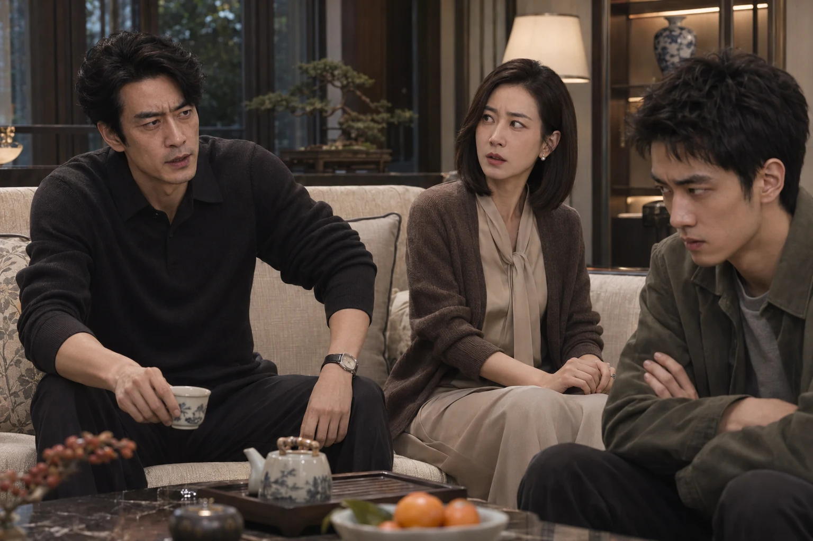
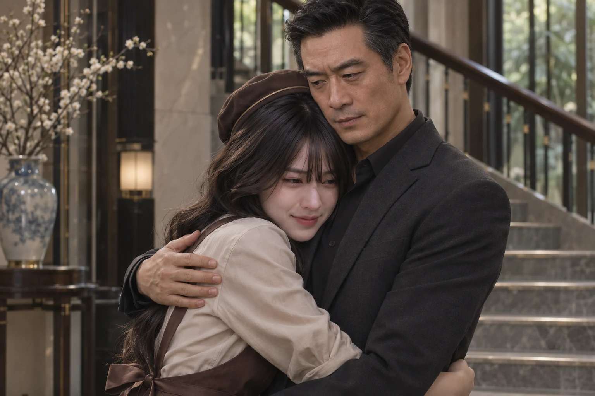

ตอนที่ 21
ไม่เคยกลัว
บ้านตระกูลเจียง
‘เจียงกั๋ว’ ประธานเจียงกรุ๊ป ผู้ผลิตชุดเครื่องนอนรวมไปถึงชุดนอน ซึ่งถือเป็นแบรนด์อันดับต้น ๆ ของประเทศ เพราะเนื้อผ้าดี ราคาจับต้องได้ มิหนำซ้ำยังใช้ได้นาน จึงได้รับคำยกย่องว่าเป็นแบรนด์เครื่องชุดเครื่องนอนคู่ครัวเรือน
ชายวัยกลางคนมีผมดกดำ ไร้ผมหงอกตามวัย รูปร่างสูงโปร่ง ดูแล้วอ่อนกว่าอายุจริงไปนับสิบปี
ซ่งเซียงเองก็ดูอ่อนเยาว์ไม่ต่างกัน บ่งบอกได้ว่าสองสามีภรรยาตระกูลเจียงดูแลตัวเองดีขนาดไหน
“วันนี้เจ้ารองกลับบ้านช้านะ” เจียงกั๋วถามถึงลูกชายคนรอง ระหว่างนั่งจิบชาและอ่านข่าวข้าง ๆ ภรรยาอยู่พักใหญ่
พูดไม่ทันขาดคำ เขาก็เห็นลูกชายคนรองเข้าบ้านมาพร้อมอาการหงุดหงิดงุ่นง่าน
เดิมทีชายหนุ่มตั้งใจว่ากลับมาถึงแล้วจะเข้าห้องนอนทันที แต่เห็นผู้เป็นพ่อนั่งอยู่ในห้องนั่งเล่น เขาจึงต้องเข้าไปหาอย่างเลี่ยงไม่ได้ “สวัสดีครับพ่อ”
“ไปหงุดหงิดอะไรมาอีก ช่วงนี้ลูกดูอารมณ์ไม่ค่อยดีตลอดเลยนะ” เจียงกั๋วเลิกคิ้วถามเสียงเข้มงวด
เจียงเซินตัวเกร็งขึ้นมาเล็กน้อย สุดท้ายเขาก็เลือกจะส่ายศีรษะ “มีเรื่องให้คิดนิดหน่อยครับพ่อ แต่ไม่ใช่เรื่องสำคัญอะไร”
เจียงกั๋วส่งเสียงในลำคอเชิงรับรู้ “เจ้ารอง.. อะไรที่ไม่ใช่เรื่องของเรา อย่ายื่นมือเข้าไปก้าวก่ายมากนัก นอกจากดูไม่มีมารยาทแล้ว ยังสร้างความแตกแยกโดยไม่จำเป็นด้วย”
ซ่งเซียงหันขวับ จ้องหน้าสามีเขม็ง ที่เคยตกลงกันไว้ไม่ใช่แบบนี้ ขณะเดียวกันเจียงเซินก็ตกตะลึงเช่นกัน

“พ่อไม่ความว่ายังไงครับ”
“แกไม่ได้โง่ถึงขนาดจะไม่เข้าใจนะเจ้ารอง” เจียงกั๋วกดเสียงต่ำกว่าเก่า
ที่ผ่านมาเขาเป็นพ่อที่เข้มงวดกับลูก ๆ แต่ก็ไม่ได้จำกัดอิสระ และเด็ดขาดไม่ผ่อนปรนเมื่อเป็นเรื่องสำคัญ ดังนั้นหากเทียบกันแล้ว ลูกชายทั้งสองเกรงกลัวเจียงกั๋วมากกว่าซ่งเซียง
“ถ้าเป็นเรื่องนั้น พ่อวางใจเถอะครับ ผมคงสร้างความแตกแยกเพิ่มขึ้นกว่านี้ไม่ได้แล้ว” เจียงเซินคิดว่าพ่อของเขารู้เรื่องที่เกิดขึ้นในโรงพยาบาล ในใจเกิดการต่อต้านอย่างรุนแรง
สุดท้ายในฐานะลูกเขย พ่อก็มองว่าสิ่งที่คุณปู่ทำนั้นถูกต้อง ต่อให้เขาอธิบายไปก็เปล่าประโยชน์
“อาเซิน ทำไมถึงพูดแบบนี้” คิ้วเรียวสวยผูกกันเป็นปม เธอคิดอยู่แล้วว่าถ้าเจียงกั๋วตักเตือนตรง ๆ ลูกต้องต่อต้านขึ้นมาแน่ จึงบอกให้สามีใช้วิธีละมุนละม่อม แต่สามีกลับไม่ทำตามที่รับปากไว้
“คุณปู่เกือบตัดลุงใหญ่ออกจากผังวงศ์ตระกูลอยู่แล้ว ความขัดแย้งมันลุกลามมากขึ้นเรื่อย ๆ เพราะมีคนบางคนหัวแข็ง เอาแต่ความคิดตัวเองเป็นใหญ่” เจียงเซินไม่รอให้พ่อแม่กล่าวสิ่งใดเพิ่มเติม เดินหนีกลับห้องนอน แม้แต่เสียงเรียกเจือความโกรธเคืองที่ดังไล่หลัง เขายังทำเป็นหูทวนลม
“ไหนคุณรับปากแล้วไงว่าจะใช้วิธีอื่น” ซ่งเซียงหันกลับไปเอ็ดสามีอย่างไม่พอใจ
เจียงกั๋วพรูลมหายใจหนัก ๆ “ผมตั้งใจแบบนั้น แต่พอเห็นเจ้าร้องดื้อรั้น ผมก็อดหงุดหงิดไม่ได้”
ซ่งเซียงหรี่ตาลง นัยน์ตาคู่สวยวาววับ ปกปิดความแหลมคมไว้ไม่มิด แต่เธอเลือกจะมองข้ามสัญญาณเตือนนี้ไปเพราะความประมาท
...
ซ่งหว่านทรมานกับอาการฟกช้ำบริเวณหน้าท้อง แม้ไม่กระทบกระเทือนอวัยวะภายใน แต่มันทำให้เธอลุกจากเตียงไม่ได้สองวันเต็ม ๆ รอยช้ำยังเป็นสีเขียวอมม่วงน่ากลัว เพียงนึกถึงยามหัวเข่ากระแทก เธอก็ขนลุกแล้ว
ซ่งเหวินเห็นบาดแผลดูน่ากลัวเช่นนั้นก็ยิ่งปักใจเชื่อว่าซ่งอวิ๋นทำร้ายร่างกายพี่สาวตัวเอง ด้วยทราบดีว่าลูกสาวคนรองมีศิลปะป้องกันตัวยอดเยี่ยมขนาดไหน
“ลุกไหวแล้วเหรอลูก รอยช้ำจางลงบ้างหรือยัง” ซ่งเหวินถามขึ้นเมื่อลูกสาวลงมาจากชั้นสองของบ้านพร้อมยูนิฟอร์มของร้านขนมแบรนด์ดัง
“ไม่ช้ำเท่าไหร่แล้วค่ะ ให้นอนอยู่ที่บ้านหนูก็เบื่อ กลับไปทำงานดีกว่า”
“พ่อไม่ห้ามถ้าลูกอยากทำงาน แต่พ่อจะหางานอื่นที่สบายกว่าให้ลูกเอง อย่าไปยืนเป็นพนักงานแคชเชียร์จนขาแข็งแบบนั้นเลย ได้เงินไม่คุ้มสักนิด” ซ่งเหวินไม่เห็นด้วยกับการที่ลูกสาวที่เขาถนอมไว้กลางฝ่ามือต้องลำบากทำงานบริการผู้อื่น
เธอเกิดมาจากท้องของหญิงอันเป็นที่รัก แค่ลูกไม่อาจเข้าบ้านซ่งได้อย่างถูกต้อง ไม่ได้รับการยอมรับ เขาก็ปวดใจจะแย่แล้ว อย่างไรเขาก็เลี้ยงเธอได้ตลอดชีวิต จะต้องลำบากขนาดนี้ไปเพื่ออะไร
“หนูไม่ได้มองเรื่องตัวเงินหรอกค่ะ ที่จริง.. หนูคิดถึงคุณแม่ เลยอยากหาอะไรให้ตัวเองทำ จะได้ไม่ต้องเศร้า” ซ่งหว่านฝืนยิ้ม ก่อนเข้าไปกอดซ่งเหวินไว้แน่น “ปล่อยให้หนูทำงานเถอะนะคะ”
หัวใจซ่งเหวินบีบรัด สงสารจนพูดอะไรไม่ออก ได้แต่กอดตอบพลางลูบแผ่นหลังลูกสาวอย่างปวดใจ

...
ในที่สุดรายการ The People’s Voice ของผู้กำกับหูก็กำลังจะเริ่มเปิดกล้องในอีกไม่ช้า แม้จะเป็นรายการน้องใหม่ แต่กลับมีผู้กรอกใบสมัครมหาศาล ด้วยสนใจที่รายการไม่มีคณะกรรมการนั่งตัดสิน แต่ใช้ความรู้สึกของผู้ชมในการโหวตล้วน ๆ
แน่นอนว่าผู้ชมหนึ่งคนจะโหวตได้เพียงหนึ่งคะแนนเท่านั้น จะไม่มีการปั่นคะแนนใด ๆ ทั้งสิ้น ผู้เข้าแข่งขันจากทั่วสารทิศรู้สึกว่ามันน่าสนใจและเห็นแสงแห่งความหวัง
ซ่งอวิ๋นเดินทางมายังสตูดิโอส่วนตัวของผู้กำกับหูพร้อมน้องชาย วันนี้เธอนัดคุยรายละเอียดว่าต้องทำอะไรบ้าง ซึ่งสิ่งที่เขาบอกก็ไม่ได้ยากอย่างที่คิด
“อาอวิ๋นไม่ต้องห่วงเลย การแสดงเปิดรายการไม่ยุ่งยาก แค่ต้องร้องเพลงโชว์หนึ่งถึงสองเพลง แต่เพราะมันเป็นรายการถ่ายทอดสด หากเกิดข้อผิดพลาดก็จะกลับมาแก้ไม่ได้ อาจต้องซักซ้อมร่วมกันสักสามวัน”
รายการของเขาจะถ่ายทอดสดวันเสาร์และอาทิตย์ ส่วนวันจันทร์ถึงศุกร์ ทางรายการจะลงวิดีโอคลิปของผู้เข้าแข่งขันระหว่างซักซ้อมก่อนวันแสดงจริง
“ไม่มีปัญหาค่ะ ซ้อมกี่วันก็ได้ ฉันไม่อยากให้พลาดตอนขึ้นแสดงเหมือนกัน” ซ่งอวิ๋นจะสบายใจมากกว่าหากได้ทำความคุ้นเคยกับนักดนตรีของรายการ
ที่สำคัญการยืนบนเวทีต่อหน้าคนเยอะ ๆ ก็ไม่ง่ายขนาดนั้น แม้เธอจะเคยผ่านมันมาแล้วก็ตาม
“พี่สาวไม่อยากลงแข่งจริงเหรอครับ” ซ่งจื้อรู้สึกเสียดายความสามารถของพี่สาว ถึงเขาจะหวงซ่งอวิ๋นขนาดไหน แต่เธอควรแสดงพรสวรรค์ให้คนอื่น ๆ ได้เห็นเป็นขวัญตาอีกครั้ง
“ไม่ดีกว่า เดี๋ยวจะเปิดเทอมแล้ว พี่ได้ยินว่าฝึกทหารเหนื่อยมาก คงมาแข่งขันทุกอาทิตย์ไม่ไหว” ซ่งอวิ๋นโบกไม้โบกมือปฏิเสธพัลวัน
ทางรายการไม่ได้บังคับว่าผู้เข้าแข่งขันต้องอยู่แค่ในสตูดิโอเพื่อเก็บฟุตเทจในวันธรรมดา เป็นความสมัครใจของผู้เข้าแข่งขันเอง ซึ่งก็ต้องยอมรับว่าคลิปการซักซ้อมจะดึงดูดความสนใจจากผู้ชมได้มากขึ้น
ซึ่งซ่งอวิ๋นอยากใส่ใจกับการเรียนปีหนึ่งมากกว่า..
“ยังไงก็ขอบใจมากนะอาอวิ๋น อุตส่าห์ตอบรับคำขอของทางเรา” ผู้กำกับหูไม่คิดโน้มน้าวให้เธอร่วมแข่งขัน แค่เธอยอมมาร่วมแสดงเปิดรายการเขาก็ดีใจแล้ว
“ไม่เป็นไรค่ะ ฉันเองก็รู้สึกสนุกเหมือนกัน”
“แล้ว.. มีผู้สมัครเยอะขนาดนี้ การคัดตัวผู้เข้าแข่งขันไปถึงไหนแล้วครับ”
“เดินมาเกินครึ่งทางแล้วละ รอบแรกคัดจากคลิปวิดีโอ รอบสองจัดสถานที่คัดเลือกในแต่ละภาค”
“แล้วไม่มีกรรมการแบบนี้ ผู้กำกับหูกับโปรดิวเซอร์ใช้เกณฑ์อะไรในการตัดสินเหรอคะ”
“พวกเรารับอาสาสมัคร 20 คนครับ พวกเขาเป็นคนทั่วไป ไม่ใช่กรรมการกิตติมศักดิ์ ให้พวกเขาช่วยกันลงคะแนนว่าผ่านหรือไม่ ถ้าคนร่วมโหวตไม่ถึงครึ่งก็ตกรอบ”
“แบบนี้นี่เอง..” ซ่งอวิ๋นเห็นด้วย รู้สึกว่ารูปแบบรายการของเขาน่าสนใจและดูแปลกใหม่
“จริงสิ ในบรรดาผู้เข้ารอบ มีคุณชายรองเจียงกับน้องสาวด้วยนะครับ”
สองพี่น้องหันมองหน้ากันแวบหนึ่ง ก่อนซ่งจื้อเป็นฝ่ายถามกลับเพื่อความแน่ใจ “พี่รองลงแข่งแบบกลุ่มเหรอครับ”
“ใช่ วงนี้มีนักร้องสองคน” ผู้กำกับหูรู้สึกแปลก ๆ กับท่าทีของสองพี่น้อง แต่ช่วงหลังมานี้เขายุ่งจนหัวหมุน ไม่รับรู้ข่าวลือใด ๆ เกี่ยวกับครอบครัวซ่ง จึงไม่ทันได้สนใจความบาดหมางเบื้องหลัง
ซ่งอวิ๋นยิ้มอ่อน ๆ เป็นเชิงรับรู้ ตอนนี้พื้นที่ในใจพี่รอง มีซ่งหว่านมาแทนที่ของเธอโดยสมบูรณ์แล้ว เมื่อก่อนเขาเคยบอกว่าอยากให้เธอเป็นนักร้องหญิงในวงของเขา ตอนนี้เหมือนในฝันทุกอย่าง เขาให้ความสำคัญกับซ่งหว่านมาเป็นอันดับแรก เป็นความจริงที่เธอควรต้องยอมรับ
ผ่านมาเป็นเดือน ฝ่ายนั้นเงียบหายไป เธอนึกว่าวางแผนอะไรอยู่ ที่แท้ก็เตรียมตัวรอบคัดเลือกนี่เอง แน่นอนว่ารับรู้เช่นนี้แล้ว เธอยังคงไม่คิดหลีกเลี่ยง อยากทำอะไรก็ทำ มีโอกาสเธอก็โต้กลับ
...
ข่าวการออนแอร์รายการผ่านช่องทางถ่ายทอดสดเป็นที่สนใจของชาวเน็ตอย่างล้นหลาม เนื่องจากทางโปรดิวเซอร์รายการประกาศผ่านบัญชีโซเชียลส่วนตัวว่าจะมีเซอร์ไพรซ์ที่ทุกคนคาดไม่ถึง
อันที่จริงรายการ The People’s Voice ได้รับความสนใจไม่น้อยอยู่แล้ว เมื่อถึงวันที่เริ่มออกอากาศ ช่องความคิดเห็นในห้องถ่ายทอดสดจึงไหลเป็นน้ำตก แทบจับใจความไม่ได้เลยว่าพวกเขาพูดเรื่องอะไร
ซ่งอวิ๋นนั่งอยู่ในห้องแต่งตัว เรือนร่างอ้อนแอ้นสวมชุดเดรสยาวกรอมเท้าสีขาว ปักไข่มุกบริเวณหน้าอก เรือนผมดำขลับเกล้าขึ้นสูง ประดับปิ่นไข่มุกเข้าชุด
ดวงหน้าสวยถูกแต่งแต้มด้วยเครื่องสำอางสีอ่อน แม้เธอจะโตขึ้นมาก แต่ยังหลงเหลือเค้าโครงวัยเยาว์ โดยเฉพาะนัยน์ตาดอกท้อทรงเสน่ห์คู่นี้
“น้องอวิ๋น.. พี่ดีใจที่ได้เจอน้องอวิ๋นอีกครั้งนะคะ” ช่างแต่งหน้าวัยสามสิบปลาย ๆ พูดอย่างปลื้มอกปลื้มใจ เพราะตอนซ่งอวิ๋นแข่งร้องเพลง เธอเองก็เป็นช่างแต่งหน้าฝึกหัดในกองเช่นเดียวกัน การได้เห็นเด็กคนนั้นเติบโตมาอย่างสมบูรณ์แบบ ทำให้เธอชื่นใจเหลือจะกล่าว
“ดีใจเช่นกันค่ะ พี่สาวสวยเหมือนเดิมเลย”
“โธ่ สิ่งที่ไม่เปลี่ยนคือนิสัยปากหวานสินะคะ ไปเล่าให้เพื่อนฟังต้องโดนเพื่อนอิจฉาแน่ ๆ”